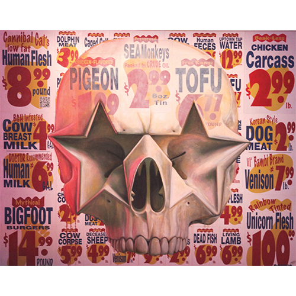

Exhibitions
Letters from America, London Pleasure Gardens; Black Rat Gallery (Black Rat Projects), presented by Corey Helford Gallery, London, United Kingdom, June 30–July 13, 2012.
Literature
Ron English, Status Factory: The Art of Ron English (San Francisco: Last Gasp of San Francisco, 2014), p. 196. ISBN 978-0867197891.
Notes